「font-family」で文字の書体を指定
CSSで文字の書体を指定する際は「font-family」を使用します。
フォントは同じ書体でも太字やイタリックなどの違いがありますが、それらがセットになったフォントファミリー名で指定します。
body {font-family: フォントファミリー名;}
例えば、山田家に太郎くんや花子さんがいた場合、{font-family: 山田 太郎;}ではなく、{font-family: 山田;}といったファミリー名で指定します。
こちらはメイリオのファミリーたちですが、フォントによっては細字や太字、ミディアムや極太など多くの書体が用意されている場合もあります。
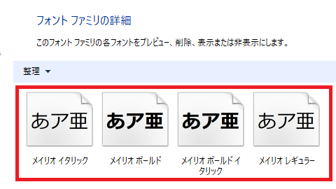
この場合、{font-family: "メイリオ レギュラー";}ではなく、{font-family: "メイリオ";}などと指定するのが一般的です。
書体の太さも指定したい場合、ファミリー名を指定したあと、使用したい箇所にfont-weight:bold;やfont-weight:500;などと個別に指定すると「メイリオ ボールド」の書体で表示されます。
この「font-family:」のあとの半角スペースについては、あってもなくても正常に表示されます。また、font-familyを何も指定しないデフォルトの場合、OSやブラウザによって違いはあるものの、Windowsではおおむねメイリオ、Macではヒラギノの書体で表示されることになります。
そのページで適用されている書体を調べる場合、Chromeデベロッパーツールを使い、「Elements」→「Computed」の箇所からチェックされるとよいでしょう。
表示させたい優先順に複数のフォント名を指定
CSSでフォントを指定しても、閲覧者の環境でそのフォントがインストールされてない場合は正常に表示されません。そのため、表示されなかった場合のために、コンマ（,）で区切って複数のフォント名を左から順に指定しておきます。
body {font-family: Helvetica, Arial, Meiryo, sans-serif;}
場所については、bodyタグに設定しておけば、ページ全体に適用されます。
Dreamweverのソフトで「font-family:」と入力するといくつかの候補が表示されますが、「明朝体」はあまり使用されていないため、一般的には「ゴシック体」の「ヒラギノ角ゴ Pro W3」や「メイリオ」を選択されることをおすすめします。
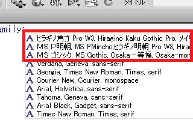
■Dreamweverの例
font-family: "ヒラギノ角ゴ Pro W3", "Hiragino Kaku Gothic Pro", "メイリオ", Meiryo, Osaka, "ＭＳ Ｐゴシック", "MS PGothic", sans-serif;
ゴシック体には「ＭＳ Ｐゴシック」などもありますが、こちらは少し古いタイプになるため、Mac用に「ヒラギノ角ゴ Pro W3」を指定し、Windows用に「メイリオ」をメインに指定しておけば十分かと思います。
一般的な総称フォント名はfont-familyの最後に記述する
上記のうち、「ヒラギノ角ゴ Pro W3」や「メイリオ」などのフォントは「ゴシック体」になりますが、CSSでfont-familyを指定する際には、「ゴシック体」のような一般的な総称フォント名を最後に記述するようにします。
「コーラをください。なかったら他の炭酸系の飲み物をください。」のように、まずは個別のフォント名を記載したのち、汎用性の高い一般的な総称フォント名を後ろに記述するようにします。
この一般的な総称フォントには、以下の５つがあります。
- sans-serif（ゴシック体）
- serif（明朝体）
- cursive（筆記体）
- fantasy（ファンタジー）
- monospace（モノスペース）
このなかで使用頻度が高いのはゴシック体の「sans-serif」です。
上記のDreamweverの例でも最後に「sans-serif」が指定されていますが、この「sans」はフランス語で「なし」の意味で、「sans-serif」だと「セリフ（ヒゲ）がない」書体という意味になります。
W3Cのサイトでは、このsans-serifのサンプルとしてVerdanaなどが紹介されていますが、メイリオも「sans-serif」のひとつです。
■サンセリフ（ゴシック体）の例
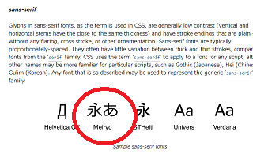
そのため、優先順としては具体的なフォント名を指定したのち、もし使えない場合には似たような書体という意味で、後ろの方に一般的な総称の「sans-serif」などを指定しておくことをおすすめします。
例えば、「メイリオください。なかったら他のサンセリフ系のフォントをください。」のように指定する際、以下のように記述します。
body {font-family: Meiryo, sans-serif;}
一方、セリフの例としては「ＭＳ Ｐ明朝」が紹介されています。
■セリフ（明朝体）の例
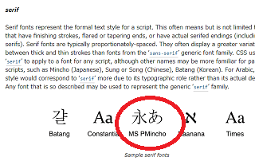
この書道っぽいヒゲのあるセリフ調（明朝体）のサイトはあまり見かけることはなく、大手メディアのfont-familyを見ても「serif」を指定しているケースはあまり見たことがないです。他の筆記体の「cursive」や「fantasy」もまず見たことがないので、通常は「sans-serif」一択で問題ないかと思います。
Wikipediaでは「body{font-family: sans-serif}」とのみ指定されていますが、「sans-serif」だけを指定するのでもよいかと思います。
欧文フォントは日本語フォントよりも前に指定
欧文フォントを使用する際は、日本語フォントよりも順序を前に指定することをおすすめします。
日本語フォントの場合、漢字、カタカナ、ひらがな、英語などがセットになっていますが、例えば、日本語フォントのメイリオのアルファベットはこのようになっています。
■メイリオの中身
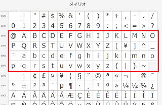
このメイリオは日本語フォントのため、漢字やひらがなのフォントも含まれています。
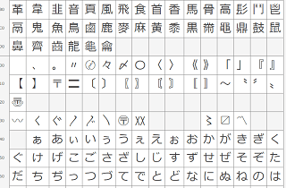
一方、欧文フォントの場合は英語のみになりますが、例えば、「Arial」の場合のアルファベットは以下のようになっており、「メイリオ」のアルファベットとは表示に違いがあります。
■Arialの中身
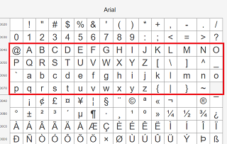
ここで、英語についてはクオリティー高めのArialのフォントを使い、日本語についてはメイリオのフォントを使いたい場合、CSSではArialを先に指定したのちにメイリオを指定する形になります。
{font-family: Arial, Meiryo;}
このようにすることで、まずは英語についてはArialが適用されますが、日本語についてはArialでは対応するフォントがないため、次のメイリオが適用されることになります。逆に、{font-family: Meiryo, Arial;}のように日本語フォントを前に設定してしまうと、英語も日本語もメイリオが適用されてしまい、欧文フォントが表示されないので注意しましょう。
この「Arial（エイリアル、アリアル）」と「メイリオ」で英語での表示を比較してみますと、Arialは「e」や「a」のカーブが繊細で上品な印象を感じます。
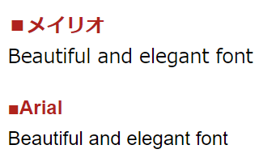
Googleの検索結果などでは「{font-family: arial, sans-serif;}」などと指定されていますが、この場合、英語の箇所は「arial」、日本語の箇所はWindowsの環境だとサンセリフのメイリオで表示されるはずです。
メイリオも綺麗ですが、Arialは英語での表示がクオリティー高めになりますし、WindowsとMacの両方で標準フォントとなっているので使いやすいかと思います。
そのほか、欧文フォントではHelvetica（ヘルベチカ）の人気も高く、おおむねarialと同じようなフォントと感じていますが、Helveticaも設定しておくとよいかもしれません。
{font-family: Helvetica, Arial, sans-serif;}
これに日本語フォントとして、Macでのヒラギノ、Windowsでのメイリオも指定しますと、以下のような設定になります。
{font-family: Helvetica, Arial, "Hiragino Kaku Gothic ProN", Meiryo, sans-serif;}
ただし、メイリオと比較すると、Arialは上記のようにフォントの幅が狭いため、両方が混在するとサイト全体の統一感が失われてしまうかもしれません。その場合は日本語フォントのみで設定することをおすすめします。
font-familyのフォント名に空白などを含む場合の引用符
フォント名に空白を含む場合や日本語の場合は引用符で囲むことをおすすめします。
body {font-family: Helvetica, Arial, "Hiragino Kaku Gothic ProN", "メイリオ", sans-serif;}
引用符のシングルクォート（'）とダブルクォート（"）はどちらでも構いませんが、pタグなどにstyle属性で直接指定する際はダブルクォートが重複してしまうため、シングルクォートを使用することをおすすめします。
<p style="font-family: 'メイリオ';">
一方、CSSにはダブルクォートで記述している人が多い印象があります。
p {font-family: "メイリオ";}
ただし、引用符を付けなくても大抵のブラウザでは正常に表示されるはずです。
また、古いブラウザでは"メイリオ", Meiryo,のように、英語表記と日本語表記によって表示される、されないの違いがあり、認識されないときのために以下のように両方を書く人もいます。
body {font-family: Helvetica, Arial, "ヒラギノ角ゴ ProN W3", "Hiragino Kaku Gothic ProN", "メイリオ", Meiryo, sans-serif;}
加えて、フォントファミリー名はOSによっても違いがあり、游ゴシック体についてはWindowsでは「游ゴシック」、Macでは「游ゴシック体」などの違いがあるため、どのように記述するのかはサイト運営者によってバラバラです。
全ての閲覧環境を考慮して指定するのが面倒な場合、総称フォントファミリー名の{font-family: sans-serif;}のみを指定するだけでも無難に表示されるものと思います。
WEBフォントの「Noto Sans JP」がおすすめ
当サイトではWEBフォントの「Noto Sans JP」を設定している箇所が多いですが、メイリオと比較すると以下のような違いがあります。
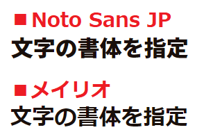
アップにした場合、メイリオもきれいですが、Notoの方がきれいと感じています。一方で、メイリオは小さい文字でもはっきりくっきり明瞭に表示されます。メイリオの由来は「明瞭」から来ているようですが、可読性の高さは非常に高いものがあります。
あくまで個人の感想ですが、16pxあたりまではメイリオ、それより大きな文字はNoto、iPhoneなどのスマホではヒラギノあたりが最適かもしれません。
もしNotoを使用する場合、等幅フォントのMonoも入って種類の多い「Noto Sans CJK JP」版の方にDemiLight（font-weight: 300;）がありますが、一般的な「Noto Sans JP」のRegular（font-weight: 400;）よりも、DemiLightの方が使いやすいと感じています。
（※追記：Noto Sans CJK JPはダウンロードできなくなったみたいです。）
■DemiLightのサンプル
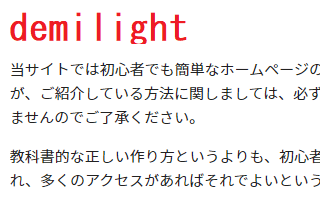
■Regularのサンプル
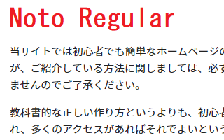
Regularと大した違いはありませんが、DemiLightの方がなめらかなため、当サイト運営者は主にこちらを使用しています。タイトルなど太字の箇所については、40px～50pxあたりのフォントサイズの場合はBlackがおすすめですが、通常はBoldあたりで十分と感じています。
游ゴシックは太字が美しい
游ゴシックはWindowsとMacの標準フォントなので使いやすいです。
Windowsの場合、「スタート」を右クリック、「設定」→「個人用設定」→「游ゴシック」の箇所で表示を確認することができます。
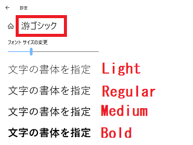
Windowsではフォント名が「游ゴシック」のため、{font-family: "游ゴシック";}を指定します。一方、Macでは「游ゴシック体」のため、Macでも指定する場合は以下のように設定します。
body {font-family: "游ゴシック","游ゴシック体";}
ただし、このままの状態ではWindowsでの表示が「Regular」になってしまい、かすれてスカスカして読みにくいです。そのため、一般的には「Medium」で表示されるよう、font-weight:500;も設定することになります。
当サイト運営者の環境の場合、font-weight:300;で「Light」、400で「Regular」、500で「Medium」、600以上だと「Bold」で表示されました。メイリオの場合も500で「Regular」、600で「Bold」のため、font-weight:500;を指定しておけば、游ゴシックが無くてメイリオが適用された場合でも太字になることはありません。
また、"游ゴシック Medium"などと直接指定する方法もありますが、ブラウザによって効かないケースもあるのでfont-weight:500;がおすすめです。
当サイト運営者の個人的な印象では、この「Medium」でも少しかすれた印象がありますが、太字の場合は綺麗に表示されると感じています。
■游ゴシック Mediumのサンプル
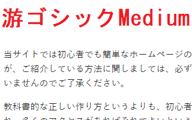
Macではヒラギノの書体が綺麗だと思いますので、"游ゴシック"のみを指定して"游ゴシック体"は指定しないのもありかもしれません。
body {font-family: "游ゴシック",sans-serif;font-weight:500;}
游ゴシックはfont-weight:500;の設定で少し複雑になりますが、WindowsとMacの標準フォントである点でメリットが多いと思います。